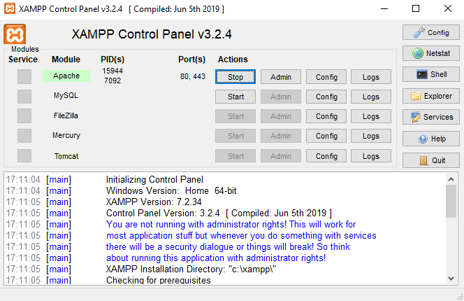

PHP
Instalacja potrzebnego oprogramowania
Dla języka PHP, który jest back-endowy (interpretowany po stronie serwera), potrzebujemy dostępu do działającego serwera. Będzie to serwer lokalny - tzw. localhost z użyciem oprogramowania o nazwie XAMPP. Dostępny jest na Windows, Linux oraz komputery Mac. Korzystanie z pakietu jest darmowe.
Pobierz pakiet XAMPPPo zainstalowaniu i uruchomieniu programu widzimy jego panel kontrolny. Jedyne co należy zrobić, aby uruchomić serwer www z PHP to kliknąć przycisk "Start" przy Apache.
Najczęstrze błędy
Jeśli u Ciebie uruchomienie nie powiedzie się (zobaczysz błędy koloru czerwonego) może to oznaczać, że masz zajęte domyślne porty, na których działa serwer www (port 80 i 443). Takie porty może blokować wiele usług, w tym przykładowo Skype. W takim przypadku należy znaleźć aplikację zajmującą port i ją wyłączyć lub zmienić porty na których działać ma serwer.
Podstawy PHP
Aby uruchomić skrypt PHP należy umieścić go w folderze htdocs, który znajduje się w folderze xampp. Pamiętaj o tym aby przed uruchomieniem skryptu zmienić nazwę pliku index.php lub usunąć go całkowicie. Aby plik był rozpoznany przez serwer WWW jako skrypt PHP musi on mieć odpowiednie rozszerzenie, aktualnie najczęściej stosowanym rozszerzeniem jest .php.
Do określenia w pliku co jest kodem HTML a co PHP służą specjalne znaczniki. Aby przejść do trybu PHP można użyć jednego z tych znaczników:
<?php echo "przykładowy tekst"; ?>
Drugi sposób to tak zwany "short tag". Można z niego korzystać tylko jeśli włączymy opcje "short-tag-open" w pliku konfiguracyjnym php.ini.
<? echo "przykładowy tekst"; ?>
Domyślnie jest on włączony.
Przykładowy skrypt który będzie wyswietli na stronie tekst "Hello World!":
<?php echo "Hello World!"; ?>
Tekst na stronie możemy umieszczać w pojedyńczym cudzysłowiu ' ' lub w podwójnym " ".
Komentarze w PHP
Czasem zachodzi potrzeba oznaczenia czegoś w kodzie, dla kogoś innego czy nawet dla siebie samego (zwłaszcza jeśli pracuje się nad dużym projektem można się pogubić). Wtedy można skorzystać z jednej z kilku metod oznaczania, dzięki którym parser PHP będzie wiedział, że dany tekst nie jest częścią skryptu i można go zignorować. Komentarze przydają się także do tymczasowego „wyłączania” niektórych linii kodu. PHP obsługuje 3 metody oznaczania komentarzy:
<?php
echo "przykladowy tekst"; //komentarz jednolinijkowy
echo "przykladowy tekst"; #komentarz jednolinijkowy
?>
<?php
echo "przykladowy tekst"; /*komentarz wielolinijkowy
tu dalej trwa
a tu się kończy*/
?>
Zmienne
Zmienna w PHP nieważne, czy jest to wartość logiczna, liczba całkowita, wymierna czy tekst, jest deklarowana tak samo - poprzez znak $. W tym języku nie musimy podawać typu zmiennej, co jest wymagane w innych językach. Nazwy zmiennych muszą zaczynać się od litery (dużej lub małej) lub dolnego podkreślenia ('_') a dalej mogą się składać z dowolnej ilości liter i cyfr. Przy nazwach zmiennych ważna jest wielkość znaków ($zm i $Zm to dwie różne zmienne).
Przykłady deklarowania zmiennych:
<?php
$zm = 1; // Zmiennej zm przypisywana jest wartość równa 1
$Zm = "zmienna"; // Zmiennej Zm przypisany jest ciąg znaków "zmienna"
$ZM = $zm; // Zmiennej ZM przypisywana jest wartość zmiennej zm
echo "To jest $Zm"; // Powinien wyświetlić się napis "To jest zmienna"
echo '$ZM'; // Powinien wyświetlić się napis "$ZM"
echo $Zm; // Powinien wyświetlić się napis zmienna
?>
Operatory arytmetyczne
Są to podstawowe działania matematyczne, takie jak dodawanie, odejmowanie itp.
| Operator | Zastosowanie | Działanie |
|---|---|---|
| + | $a + $b | suma |
| - | $a - $b | różnica |
| * | $a * $b | iloczyn |
| / | $a / $b | iloraz |
| % | $a % $b | modula - reszta z dzielenia |
Na przykład:
<?php
$a = 4;
$b = 3;
echo $a + $b; //wyświetli się 7
echo $a - $b; //wyświetli się 1
echo $a * $b; //wyświetli się 12
echo $a / $b; //wyświetli się 1.(3)
echo $a % $b; //wyświetli się 1
?>
Operatory przypisania
Operator przypisania służy do nadania wartości. Najprostszym przykładem wykorzystania tego operatora jest przypisanie zmiennej konkretnej wartości:
<?php
$a = 4;
?>
Możemy dokonać przypisania wartości kilku zmiennych. Dokonamy tego przeznaczając dla każdej zmiennej kolejną linię, bądź oddzielając kolejne przypisania przecinkiem.
<?php
$a = 4;
$b = 3;
$a = 4, $b = 3;
?>
Możemy również wykorzystać ten operator wielokrotnie, przypisując jednocześnie wielu zmiennym tę samą wartość:
<?php
$a = b = 3;
?>
| Zapis skrócony | Pełen zapis | Opis |
|---|---|---|
| $a+=1 | $a = $a + 1 | Zwiększenie wartości $a o 1 |
| $a-=1 | $a = $a - 1 | Zmniejszenie wartości $a o 1 |
| $a*=1 | $a = $a * 1 | Pomnożenie wartości $a przez 1 |
| $a/=1 | $a = $a / 1 | Podzielenie wartości $a przez 5 |
| $a%=1 | $a = $a % 1 | Reszta z dzielenia $a przez 1 |
| $a.="tekst" | $a = $a."tekst" | Dopisanie "tekst" na końcu zmiennej $a |
Operatory porównania
Te operatory porównują wartości i zwraca true (prawda - 1) jeśli porównanie jest prawdziwe lub false (fałsz - 0) jeśli takie nie jest.
| Operator | Zastosowanie | Wynik |
|---|---|---|
| == | $a == $b | Zwiększenie wartości $a o 1 |
| $a-=1 | $a = $a - 1 | Zmniejszenie wartości $a o 1 |
| $a*=1 | $a = $a * 1 | Pomnożenie wartości $a przez 1 |
| $a/=1 | $a = $a / 1 | Podzielenie wartości $a przez 5 |
| $a%=1 | $a = $a % 1 | Reszta z dzielenia $a przez 1 |
| $a.="tekst" | $a = $a."tekst" | Dopisanie "tekst" na końcu zmiennej $a |
Instrukcje warunkowe
Instrukcje warunkowe są wykorzystywany aby nasz kod dokonywał różnych operacji w zależności od określonych warunków. W PHP mamy do dyspozycji kilka typów takich instrukcji.
Instrukcja warunkowa if
Podstawowa budowa instrukcji warunkowej wygląda następująco:
<?php
if(warunek) instrukcja;
if(warunek){
instrukcje;
}
?>
Jeżeli warunek zostanie spełniony, wykonaj instrukcję. Warunek spełniony to taki, dla którego wartość logiczna jest równa true (liczbowo = 1), czyli jest prawdziwa. Przykładowo jeśli wartość zmiennej $a w poniższym przykładzie będzie liczbą większą niż 0 na ekran wypisze się stosowny komunikat:
<?php
if($a>0) echo "A jest większe od 0";
?>
Po spełnieniu warunku można wykonać więcej niż jedną instrukcję. Wówczas wszystkie elementy, które mają się wykonać w przypadku prawdziwości warunku zamykamy w blok instrukcji pomiędzy klamrami {}.
<?php
if($a>0){
echo "a dodatnie";
$b++;
$c--;
}
?>
Możemy też za pomocą instrukcji warunkowej if wyświetlić co się stanie w innym przypadku, gdy pierwszy warunek nie zostanie spełniony. Robimy to za pomocą else lub elseif jeśli chcemy sprawdzić więcej niż dwa warunki.
<?php
//przyklad z else
if($a>0){
echo "a większe od 0";
}else{
echo "a nie jest większe od 0";
}
?>
<?php
//przyklad z elseif
if($a>0){
echo "a większe od 0";
}elseif($a<0){
echo "a nie jest większe od 0";
}else{
echo "a jest równe 0";
}
?>
Instrukcja warunkowa switch
Składnia switch jest instrukcją warunkową, ale jedną zmienną można porównać nie z jedną wartością, ale z kilkoma. Niestety nie można konstruować złożonych warunków – możliwe jest tylko proste porównywanie (równoważne instrukcji: if($zmienna=="wartość") instrukcja).
<?php
switch(liczba_całkowita){
case wartość1:
instrukcje;
break;
case wartość2:
instrukcje;
break;
...
case default;
instrukcje;
break;
}
?>
Przy instrukcji default nie musimy podawać słowa case. Instrukcje zawarte w tej częsci switcha wykonywane są gdy nasza liczba_całkowita nie będzie miała żadnych z wcześniejszych wartości zawartych w kolejnych opcjach case. Przykład użycia switcha:
<?php
$a = 3;
switch($a){
case 1:
echo 'Jeden';
break;
case 2:
echo 'Dwa';
break;
default:
echo 'Inna liczba';
break;
}
//wyświetli się "Inna liczba" ponieważ żadna wartość case nie pasuje do wartości $a.
?>
Pętle
Pęlte są używane aby uniknąć niepotrzebnego powtarzania tych samów bloków kodu. Wykonuje ona zadane instrukcje daną ilość razy.
Pętla for
Pętla składa się z 3 elementów zamkniętych pomiędzy nawiasami okrągłymi, oddzielonymi od siebie średnikami: pierwszy to wartości początkowe zmiennych – blok ten wykonuje się raz, na początku działania pętli, drugi to warunek lub warunki zakończenia pętli – sprawdzane na początku każdego obiegu pętli i trzeci to blok instrukcji wykonywanych na koniec każdego obiegu pętli, najczęściej inkrementacja zmiennej.
<?php
for(wartości_początkowe;warunek;zmiana){
instrukcje;
}
?>
Przykład użycia pętli for:
<?php
for($x = 1; $x <= 10; $x++){
echo $x."<br>";
//wypisanie wszystkich całkowitych wartości x (od 1 do 10)
}
?>
Brak warunku zakończenia powoduje nieskończone działanie pętli. Istnieją jednak specjalne instrukcje przerywające działanie pętli:
- continue – przerywa obecny obieg pętli, pomija kolejne instrukcje, przechodzi do kolejnego obiegu
- break – przerywa działanie pętli, program przechodzi za klamrę zamykającą pętlę }
Na przykład:
<?php
for($x = 1; $x <= 10; $x++){
if($x % 2 != 0) continue;
echo $x.", ";
//wypisanie wszystkich całkowitych wartości x podzielnych przez 2 (2, 4, 6, 8, 10)
}
?>
<?php
for($p=1;;$p++){ //pętla nie ma warunku zakończenia.
echo $p;
if($p == 7) break;
//W przypadku gdy zmienna $p osiągnie wartość 7 przerwane zostaje działanie pętli.
}
?>
Pętla while
Jest ona wykorzystywana w sytuacjach, kiedy niezbędne jest wykonywanie jakiejś operacji dopóki nie zostanie spełniony warunek. While zbudowany jest w podobny sposób jak instrukcja warunkowa if.
<?php
while(warunek){
instrukcje;
zmiana;
}
?>
Przykład użycia pętli while:
<?php
$i=0;
while($i<10){ //działa tak długo jak spełniony jest warunek $i<10
echo $i." ";
$i++;
} //wypisanie wszystkich całkowitych wartości x (od 0 do 9)
?>
Pętla do...while
Odmianą pętli while jest pętla do…while. Pętla while różni się od tej pętli pod względem kolejności zapisu warunku i bloku instrukcji, a także tym, że pętla while w przypadku nie spełnienia warunku nie wykona się wcale, natomiast blok do{} wykona się jeden raz zawsze, dopiero później sprawdzi, czy warunek jest prawdziwy.
<?php
do{
instrukcje;
}while(warunek);
?>
Przykład użycia pętli do...while:
<?php
$i=0;
do{
echo $i; //wypisanie wszystkich całkowitych wartości x (od 0 do 9)
$i++;
}
while($i<10); //działa tak długo jak spełniony jest warunek $i<10
?>
Pętla foreach
Foreach działa na elementach tablicy. Pobiera kolejne elementy tablicy i pozwala wykonać na nich dalsze czynności.
<?php
$tablica;
foreach($tablica as $element){
instrukcje;
}
?>
Przykład użycia pętli foreach:
<?php
$tablica = array(1, 2, 3, 4);
foreach ($tablica as $element){
echo $element." "; //wypisuje elementy tablicy (1, 2, 3, 4)
}
?>
Pobiera poszczególne elementy tablicy $tablica jako $element, następnie wypisuje je na ekran.
Tablice
Tablica jest strukturą danych, która może przechowywać więcej niż jedną wartość w danym momęcie. Dostęp do danych uzyskujemy przez przypisane do nich indeksy.
Tablice jednowymiarowe
Deklaracja tablicy przedstawia się następująco. Nie określamy typu przechowywanych danych.
<?php
$tablica = array(1,2,3,4,5); //pierwszy sposób
print_r($tablica); //wyświetlone zostanie Array ([0] => 1 [1] => 2 [2] => 3 [3] => 4 [4] => 5)
$tablica[0] = "Wpis numer 0"; //drugi sposób
$tablice[1] = "Wpis numer 1";
$tablica[2] = "Wpis numer 2";
echo $tablica[2]; //wyświetlony zostanie napis "Wpis numer 2";
?>
Indeksowanie w tablicach rozpoczynamy od cyfry 0. Dlatego na przykład dziesięcioelementowa tablica będzie indeksowana od 0 do 9. Elementem tablicy może być każdy typ zmiennej (z innymi tablicami i obiektami włącznie).
Tablice asocjacyjne
W PHP występuje też inny rodzaj tablic, tak zwane tablice asocjacyjne. Są to tablice, w których zamiast indeksów liczbowych używa się identyfikatorów znakowych. Przykład:
<?php
$tablica["imie"] = "Jan";
$tablica["nazwisko"] = "Kowalski";
$tablica["adres"] = "Polna 1";
echo $tablica["imie"]." ".$tablica["nazwisko"].", ".$tablica["adres"]; //wyświetli "Jan Kowalski, Polna 1"
?>
<?php
$pracownicy = array(
"szef" => "Nowak",
"sekretariat" => "Kowalski",
"biuro" => "Barański"
);
echo $pracownicy["szef"]."<br>"; //wypisze się "Nowak"
?>
Przeglądanie tablic
Bardzo często zachodzi potrzeba wykonania jakiejś operacji na wszystkich elementach tablicy. Sprawa jest prosta jeśli tablica jest zwykłą tablicą z indeksami liczbowymi i znamy ilość tych elementów:
<?php
$tab[] = 1;
$tab[] = 2;
$tab[] = 3;
$tab[] = 4;
$tab[] = 5;
for( $x = 0; $x < 5; $x++ ) { //pętla wykona się 5 razy
echo $tab[$x]; //wyświetlą się wartości tabeli $tab (1,2,3,4,5)
}
?>
Funkcje w tabelach
- array_push – dodaje elementy na koniec
- array_pop – zabiera ostatni element
- array_shift – zabiera pierwszy element
- array_unshift – dodaje elementy na początek
- shuffle() – miesza elementy
- sort() – sortuje elementy alfabetycznie
<?php
$owoce = array("jabłko", "gruszka");
array_push($owoce, "banan", "malina");
print_r($owoce); //wyświetli Array ([0] => jabłko [1] => gruszka [2] => banan [3] => malina)
array_pop($owoce);
print_r($owoce); //wyświetli Array ([0] => jabłko [1] => gruszka [2] => banan)
array_shift($owoce);
print_r($owoce); //wyświetli Array ([0] => gruszka [1] => banan)
array_unshift($owoce, "ananas", "cytryna");
print_r($owoce); //wyświetli Array ([0] => ananas [1] => cytryna [2] => gruszka [3] => banan)
shuffle($owoce);
print_r($owoce); //wyświetli Array ([0] => gruszka [1] => banan [2] => ananas [3] => cytryna)
sort($owoce);
print_r($owoce); //wyświetli Array ([0] => ananas [1] => banan [2] => cytryna [3] => gruszka)
?>
Tablice wielowymiarowe
PHP umożliwia także deklaracje tzw. tablic wielowymiarowych. Polega to na tworzeniu kolejnych węzłów elementu dając przy tym wrażenie drzewa elementów. Tablice wielowymiarowe można deklarować podając kolejne indeksy w nawiasach kwadratowych:
<?php
$dane[0]['imię'] = 'Jan';
$dane[0]['nazwisko'] = 'Kowalski';
$dane[0]['ulica'] = 'Kowalowska';
$dane[1]['imię'] = 'Maciej';
$dane[1]['nazwisko'] = 'Nowak';
$dane[1]['ulica'] = 'Nowakowska';
?>
Innym sposobem tworzenia tablic wielowymiarowych jest zastosowanie konstrukcji Array():
<?php
$kraje = Array(
'Europa' => array('Polska', 'Anglia', 'Litwa', 'Francja'),
'Afryka' => array('Tunezja', 'Egipt', 'RPA', 'Etiopia'),
'Azja' => array('Chiny', 'Mongolia', 'Japonia', 'Kazachstan')
);
?>
Funckje w PHP
Funckja jest wyodrębnionym fragmentem kodu i pozwala w wygodny sposób wielokrotne wykorzystanie go w programie.
Deklaracja funckji
Deklaracja funkcji wygląda następująco:
<?php
function nazwa(){
instrukcje;
}
?>
Tak natomiast jej wywołanie:
<?php
nazwa();
?>
Wywołując funkcję w dowolnym miejscu strony spowodujemy jej wykonanie. Możemy to wykorzystać wywołując dany fragment kodu wielokrotnie na stronie, bądź dołączając plik z funkcjami wywoływać je na wielu stronach naszej witryny. Najprostszy przykład funkcji:
<?php
function witaj(){
echo "Witaj świecie!";
}
witaj(); //wypisze się "Witaj świecie!"
?>
Funkcja parametryczna
Funkcja może przyjmować parametry wejściowe. Są to przekazywane do wnętrza funkcji wartości, którymi możemy wewnątrz niej operować. Parametry wejściowe funkcji podajemy wewnątrz nawiasu okrągłego.
<?php
function witajimie($imie){
echo "Witaj $imie!<br>";
}
witajimie("Tomek"); //wypisze się "Witaj Tomek!" i przejdzie do następnej linii
witajimie("Franek"); //wypisze się "Witaj Franek!" i przejdzie do następnej linii
?>
Możemy podać więcej niż jeden parametr wejściowy do funkcji. Parametry wejściowe oddzielamy od siebie przecinkami.
<?php
function pies($imie, $rasa){
echo "Mój pies $imie to $rasa.<br>";
}
pies("Azor","owczarek"); //wypisze się "Mój pies Azor to owczarek." i przejdzie do następnej linii
pies("Kiler","jamnik"); //wypisze się "Mój pies Kiler to jamnik." i przejdzie do następnej linii
?>
Słowo kluczowe return
Funkcja może również zwracać wartość. Czynność tą wykonuje za pomocą return. Poniżej przedstawiam przykład wykorzystania zwracania przez funkcję wartości:
<?php
function suma($x,$y){
$suma = $x + $y;
return $suma;
}
echo "Suma 10 + 30 wynosi: ".suma(10,30)."<br>"; //wyświetli się "Suma 10 + 30 wynosi: 40"
echo "Suma 12.4 + 15.7 wynosi: ".suma(12.4,15.7)."<br>"; //wyświetli się "Suma 12.4 + 15.7 wynosi: 28.1"
?>
Domyślna wartość parametru
Możemy również ustawić domyślną wartość parametru wejściowego. W przypadku, gdy podczas wywołania funkcji nie podamy jego wartości, zostanie wykorzystana wartość domyślna.
<?php
function ustawMin($min = 50){
echo "Min wynosi $min<br>";
}
ustawMin(100); //wyświetli się "Min wynosi 100"
ustawMin(); //wyświetli się "Min wynosi 50"
ustawMin(30); //wyświetli się "Min wynosi 30"
?>
Formularze
Tutaj zajmiemy się częścią skryptową języka PHP, odebraniem danych z formularza, sprawdzeniem ich poprawności, podstawowymi formami zabezpieczenia danych czy wymuszenia ich konkretnego typu. Zacznijmy od formularza, z którego postaramy się odebrać przesłane przez niego informacje:
<form action="./" method="post">
<label for="imie">Imię:</label><input type="text" name="imie">
<label for="wiek">Wiek:</label><input type="number" name="wiek">
<label for="plec">Płeć:</label>
<input type="radio" name="plec" id="m">M
<input type="radio" name="plec" id="k">K
<label for="kolo">Ulubiony kolor:</label>
<select name="kolor">
<option value="czerwony">Czerwony</option>
<option value="zielony">Zielony</option>
<option value="niebieski">Niebieski</option>
</select>
Ulubiona seria gier:
<label for="gra1">GTA</label><input type="checkbox" name="gra1" value="gta">
<label for="gra2">FIFA</label><input type="checkbox" name="gra2" value="FIFA">
<label for="gra3">Battlefield</label><input type="checkbox" name="gra3" value="Battlefield">
<label for="gra4">Call of Duty</label><input type="checkbox" name="gra4" value="Call of Duty">
<label for="gra5">Need for Speed</label><input type="checkbox" name="gra5" value="Need for Speed">
<label for="gra6">Tony Hawk</label><input type="checkbox" name="gra6" value="Tony Hawk">
<label for="gra7">Settlers</label><input type="checkbox" name="gra7" value="Settlers">
<label for="opis">Opis:</label>
<textarea name="opis" cols="30" rows="10" placeholder="Placeholder inputa"></textarea>
</form>
Przesyłanie danych
Formularz jak widzimy przesyła dane metodą POST, wszystkie poniższe przykłady będą oparte właśnie na tej metodzie. Jeśli chcemy zrobić to samo metodą GET, jedyne co musimy zrobić z poniższym kodem, to zamienić POST na GET. Dane przesyłane metodą POST przechowywane są w tablicy $_POST. Zapisane są tam w komórkach, których indeksem jest wartość atrybutu name pola przesyłanego przez formularz. I tak, jeśli przesyłamy pole formularza o atrybycie name=”reksio”, dostępne to będzie w tablicy POST pod adresem: $_POST[“reksio”]. Analogicznie, jeśli przesyłamy to samo pole metodą GET, wartość dostępna będzie w tablicy $_GET pod adresem $_GET[“reksio”].
Na samym początku musimy określić właściwości naszego formularza, robimy to poprzez ustawienie właściwości action oraz method. Action pokazuje nam do jakiej strony będziemy przekazywać nasze dane (zmienne). Może to być dowolna strona ze skryptem. Method określa w jaki sposób będziemy przekazywać informacje:
- POST – jest to metoda poufnego przekazywania danych. Informacje przekazywane są ze strony na stronę w ciele zapytania HTTP;
- GET – dane, które przesyłamy za pomocą formularza będą widoczne URL naszego requesta;
Odbieranie wartości z pół formularza
W zależności od wybranego sposobu zmienia się tylko nazwa tablicy globalnej, w której znajdują się dane. Dostęp do nich uzyskujemy przed podanie nazwy naszego inputa, którą przypisaliśmy do jego atrybutu name w HTML:
<input type="text" name="imie" />
<input type="text" name="nazwisko" />
<?php
$imie = $_POST['imie'];
$nazwisko = $_GET['nazwisko'];
?>
Jak wiemy w HTML mamy kilka typów inputów i pobieranie danych z każdego z nich nieco się różni.
Radio (input type=”radio”)
Inputy typu radio powinny mieć taką samą wartość atrybutu name w pliku html, jeśli dotyczą tego samego zagadanienia dzięki czemu odczytujemy wartość tylko zaznaczonego elementu. Wartość przypisujemy dzięki atrybutowi value również w pliku html.
<label for="plec">Płeć</label>
<input type="radio" name="plec" value="m" />Mężczyzna
<input type="radio" name="plec" value="k" />Kobieta
<?php
$plec = $_POST['plec'];
echo $plec; //wyswietli nam value zaznaczonego radio z formularza
?>
Lista rozwijana (select)
W przypadku listy rozwijanej odwołanie stosuje do głównego tagu <select>, który zawiera w sobie wszystkie opcje zdefiniowane za pomocą tagu <option>. Poszczególnym opcją nadajemy wartość za pomocą atrybutu value.
<select> name="kolor"<
<option value="czerwony"<Czerwony</option<
<option value="zielony"<Zielony</option<
<option value="niebieski"<Niebieski</option<
</select>
<?php
$kolor = $_POST['kolor'];
echo $kolor; //wyswietli nam value zaznaczonego elementu listy z formularza
?>
Pole wybory (checkbox)
Input typu checkbox pozwala na wybranie kiku opcji. Każdy checkbox powinien mieć przypisaną wartość za pomocą atrybutu value tak jak w w innych przypadkach. Odczytujemy ich wartości troche inaczej niż we wcześniej przedstawionych przykładach.
Jeśli przypiszemy każdemu checkboxowi inna wartość atrybutu name, to wypadało by sprawdzić czy został on zaznaczony, aby PHP nie zasypało nas komukatami, że nie posiada takiego klucza tablicy globalnej. Robimy to za pomocą funkcji isset():
<label for="gra1">GTA</label><input type="checkbox" name="gra1" value="GTA">
<label for="gra2">FIFA</label><input type="checkbox" name="gra2" value="FIFA">
<label for="gra3">Battlefield</label><input type="checkbox" name="gra3" value="Battlefield">
<label for="gra4">Call of Duty</label><input type="checkbox" name="gra4" value="Call of Duty">
<label for="gra5">Need for Speed</label><input type="checkbox" name="gra5" value="Need for Speed">
<?php
if(isset($_POST['gry1']) && $_POST['gry1'] == 'GTA') echo "Wybrano GTA";
if(isset($_POST['gry2']) && $_POST['gry2'] == 'FIFA') echo "Wybrano FIFA";
...
?>
Możemy również wykorzystać tablice i zamiast sprawdzać po kolei każdy checkbox wyświetlić pętlą wszystkie wartości z zaznaczonych pól:
<label for="gra1">GTA</label><input type="checkbox" name="check_list[]" value="GTA">
<label for="gra2">FIFA</label><input type="checkbox" name="check_list[]" value="FIFA">
<label for="gra3">Battlefield</label><input type="checkbox" name="check_list[]" value="Battlefield">
<label for="gra4">Call of Duty</label><input type="checkbox" name="check_list[]" value="Call of Duty">
<label for="gra5">Need for Speed</label><input type="checkbox" name="check_list[]" value="Need for Speed">
<?php
if(!empty($_POST['check_list'])) {
foreach($_POST['check_list'] as $check) {
echo $check;
}
}
?>
Połączenie z bazą
Aby połączyć się z bazą musimy najpierw uruchomić w XAMPPie serwer baz danych MySQL. Przykład połączenia się z bazą w PHP:
<?php
$serwer = "host"; // np. localhost
$baza = "nazwabazy"; //np. cwiczenia
$user = "uzytkownik"; // np. root
$haslo = "haslo"; // np. puste dla uzytkownika root
$conn = mysqli_connect("$serwer", "$user", "$haslo", "$baza");
if(!$conn){
echo "Nie ma połączenia!";
}else{
echo "Jest połączenie!";
}
?>
Operacje na danych
Wypisanie na ekran imion i nazwisk 10 uczniów. Kod PHP z wykorzystaniem mysqli_query($połączenie, $zapytanie) – wykonanie zapytania, mysqli_num_rows($wynik) – liczba wynikowych wierszy, mysqli_fetch_assoc($wynik) – zapisanie wiersza wyniku w tablicy asocjacyjnej, $wiersz[“imie”] – pobranie elementu tablicy zapisanej w zmiennej wiersz, pod adresem imie.
<?php
$serwer = "host";
$baza = "nazwabazy";
$user = "uzytkownik";
$haslo = "haslo";
$conn = mysqli_connect("$serwer", "$user", "$haslo", "$baza");
$sql = "SELECT imie, nazwisko FROM uczen LIMIT 10";
$wynik = mysqli_query($baza, $sql);
if (mysqli_num_rows($wynik) > 0) { //jeśli liczba wierszy jest większa od 0
while($wiersz = mysqli_fetch_assoc($wynik)) {
echo "Imię: " . $wiersz["imie"]. ", Nazwisko: " . $wiersz["nazwisko"]. "<br>";
}
} else { //jeżeli jest równa 0
echo "Brak wyników";
}
mysqli_close($baza); //zamknięcie połączenia z bazą
?>
Pobranie pojedynczej wartości z tabeli:
<?php
$sql = "SELECT imie FROM uczen WHERE nazwisko LIKE 'Kowalski' LIMIT 1";
$dane = mysqli_fetch_assoc(mysqli_query($baza, $sql));
echo "Kowalski ma na imię ".$dane['imie'].".";
?>
Pobranie pojedynczego wiersza z tabeli
<?php
$sql = "SELECT imie, nazwisko FROM uczen LIMIT 1";
$wynik = mysqli_query($baza, $sql);
if (mysqli_num_rows($wynik) > 0) {
$wiersz = mysqli_fetch_assoc($wynik);
echo "Imię: " . $wiersz["imie"]. ", Nazwisko: " . $wiersz["nazwisko"]. ";
} else {
echo "Brak wyników";
}
?>
Wprowadzenie rekordu do tabeli
<?php
$sql = "INSERT INTO uczen VALUES ('null', 'Jan', 'Kowalski', '1')";
mysqli_query($baza, $sql);
?>
Modyfikacja informacji w bazie
<?php
$sql = "UPDATE uczen SET imie = 'Barbara' WHERE id = 10";
if (mysqli_query($baza, $sql)
?>
Zmienne zadania
Przypisz zmiennej $a wartość Twojego numeru z dziennika. Następnie wykonaj poniższe polecenia, wypisując rezultat każdego z nich w kolejnych liniach ekranu:
- Wartość zmiennej $a.
- Liczbę przeciwną do $a.
- Zmienną $a powiększoną o 3.
- Zmienną $a pomniejszoną o 5.
- Zmienną $a pomnożoną przez 2.
- Zmienną $a podzieloną przez 5.
- Wartość reszty z dzielenia zmiennej $a przez 2.
- Wypisz wartość zmiennej $a podniesioną do 3 potęgi.
- Wypisz tekst wraz z podstawieniem pod X wartości $a: “Wartość zmiennej $a wynosi: X i już się nie zmieni.”
Instrukcje warunkowe - zadania
Utwórz następujące skrypty:
- Obliczający wynik równania x = a/b. Wynik wypisuje na ekran. W przypadku, kiedy nie można obliczyć wyniku, wyświetli stosowny komunikat;
- Obliczający wynik równania x = a/b + c/d . Wynik wypisuje na ekran. W przypadku, kiedy nie można obliczyć wyniku, wyświetli stosowny komunikat;
- Obliczający wynik równania x = (a+6) / (b – 4). Wynik wypisuje na ekran. W przypadku, kiedy nie można obliczyć wyniku, wyświetli stosowny komunikat;
- Sprawdzający czy wprowadzona liczba jest parzysta. Na ekran wypisuje stosowny komunikat;
- Wczytujący dwie liczby. Sprawdza czy pierwsza jest podzielna przez drugą. Na ekran wypisuje stosowny komunikat;
- Sprawdzający czy wprowadzona liczba jest dodatnia, ujemna czy równa 0. Na ekran wypisuje stosowny komunikat;
- Wypisujący na ekran największą spośród trzech wprowadzonych liczb;
- Wypisujący trzy wprowadzone liczby w kolejności rosnącej;
- Sprawdzający na podstawie daty urodzenia i dzisiejszej daty czy osoba jest pełnoletnia;
- Sprawdzający czy dany znak jest dużą literą, małą literą, cyfrą, czy innym znakiem;
- Sprawdzający czy dana trzycyfrowa liczba jest palindromem;
- Sprawdzający czy poszczególne cyfry maksymalnie dwucyfrowej liczby są parzyste lub ich suma jest równa 4;
-
Wystawiający ocenę na podstawie podanej liczby punktów. Wykorzystaj następujące kryteria oceny:
- 0 – 29 pkt – ocena niedostateczna;
- 30 – 59 pkt – ocena dopuszczająca;
- 60 – 74 pkt – ocena dostateczna;
- 75 – 89 pkt – ocena dobra;
- 90 – 99 pkt – ocena bardzo dobra;
- 100 pkt – ocena celująca;
Pętle - zadania
Napisz skrypty, które będą posiadały następującą funkcjonalność:
- Wyświetli na ekranie 10 kolejnych liczb całkowitych począwszy od 1;
- Wyświetli na ekranie 10 kolejnych liczb całkowitych począwszy od 10 w kolejności malejącej;
- Obliczy i wyświetli na ekranie sumę kolejnych 10 liczb całkowitych począwszy od 1;
- Wyświetli na ekranie 10 kolejnych parzystych liczb całkowitych począwszy od 2;
- Pracownik przez X miesięcy odkłada co miesiąc Y zł. W każdym miesiącu z całej odłożonej na tą chwilę kwoty uzyskuje 8% odsetek. Jaką kwotę zgromadzi pracownik ?;
- Obliczy sumę elementów ciągu arytmetycznego, składającego się ze 100 elementów, z których każdy kolejny jest większy od poprzedniego o 10. Pierwszy element wynosi 5;
- Obliczy ilość cegieł w piramidzie o podstawie 10 x 10 cegieł;
- Obliczy ilość cegieł w ścianie o podstawie X cegieł, wysokości Y rzędów cegieł, gdzie każdy kolejny stawiany rząd cegieł jest o Z cegieł krótszy od poprzedniego (niższego);
- Oblicza wagę ściany z 8. podpunktu, przy założeniu, że jedna cegła waży K kilogramów;
- Symulujący działanie prostego kalkulatora;
- Wyświetli na ekranie ciąg arytmetyczny składający się z N elementów, gdzie pierwszy element ma wartość X, a różnica pomiędzy kolejnymi elementami ciągu wynosi Y;
- Oblicza sumę dwóch liczb podanych przez użytkownika. Algorytm ma działać tak długo, aż suma podanych liczb będzie wynosiła 0;
- Algorytm oblicza silnię wprowadzonej przez użytkownika liczby;
- Wypisuje na ekran ciąg n liczb, z których każda kolejna jest kwadratem poprzedniej liczby z ciągu. Wartość pierwszej liczby podaje użytkownik;
- Oblicza sumę oraz średnią z 10 losowych liczb z przedziału <50,100>;
Tablice - zadania
-
Utwórz tablicę o nazwie tab1, zawierającą następujące liczby całkowite: 7, 3, 1, 6, 9, 5, 4, 10, 2, 2, a następnie:
- Wypisz zawartość 5 komórki tablicy na ekran. Zmień zawartość 7 komórki tablicy, wprowadzając do niej wartość 12;
- Utwórz drugą tablicę o nazwie tab2, o tej samej wielkości co tab1. Przepisz zawartość tab1 do tab2;
- Utwórz trzecią tablicę o nazwie tab3, o tej samej wielkości co dwie poprzednie. Zawartością komórek tablicy tab3 jest suma komórek o tych samych indeksach tablic tab1 i tab2;
- Przepisz ponownie zawartość tablicy tab1 do tablicy tab2, jednak w odwrotnej kolejności;
-
Utwórz tablicę, a następnie:
- Wypełnij tablicę wartościami podanymi przez użytkownika;
- Znajdź najmniejszy i największy element w tablicy;
- Oblicz średnią wartość elementów tablicy;
- Wylicz ilość wystąpień cyfry 3 w tablicy;
- Dowolnym sposobem posortuj elementy tablicy w porządku rosnącym;
- Znajdź medianę elementów tablicy;
- Wypisz 3 najmniejsze i trzy największe elementy tablicy;
- Zwiększ wartość każdego elementu tablicy podnosząc go do kwadratu;
- Policz ilość liczb parzystych i nieparzystych w tablicy;
- Podaj ile liczb zawartych w tablicy jest podzielna bez reszty przez 3;
-
Utwórz tablicę, która zawierać będzie 10 elementów, a następnie:
- Wypełnij ją literami wprowadzonymi przez użytkownika;
- Wypełnij ją 10 literowym wyrazem podanym przez użytkownika;
- Zamień wszystkie wielkie litery na małe i odwrotnie;
- Wypisz zawartość tablicy w losowej kolejności;
-
Utwórz 100-elementową tablicę liczb całkowitych i wypełnij ją losowymi liczbami, a następnie:
- Znajdź największą spośród liczb oraz wyświetl na ekranie informację mówiącą o tym, ile razy ta liczba znalazła się w tablicy;
- Wyświetl na ekran liczby nieparzyste;
- Wyświetl na ekran liczby znajdujące się w komórkach o nieparzystych indeksach;
- Program policzy ile liczb zawiera się w przedziale <5, 15) , po czym wypisze te liczby na ekran;
- Znajdź element najbliższy wartością wprowadzonej przez użytkownika liczbie „a”;
- Znajdź poprzednik i następnik najmniejszej wartości w tablicy (wartość komórki o numerze o jeden większym i o jeden mniejszym, niż indeks minimum tablicy);
- Przepisać do nowej tablicy te elementy, których wartość jest >10. Nowa tablica ma mieć rozmiar równy ilości tych elementów;
- Utwórz nową tablicę 100 elementową. Wypełnij ją w taki sposób, aby B[i] = A[1] + A[2] + A[3] + … + A[i], gdzie B to nasza nowa, a A, stara tablica;
- Posortuj tablicę malejąco;
- Wypisz na ekran elementy, które występują w tablicy przynajmniej 3 razy;
-
Utwórz pustą tablicę 100 elementów, a następnie:
- Wypełnij tablicę kolejnymi liczbami ciągu Fibonacciego;
- Wypełnij tablicę kolejnymi potęgami liczby 2;
- Wypełni tablicę ciągiem liczb: 3, 6, 9, 12, …;
- Wypełni tablicę ciągiem liczb: 2, 4, 8, 16, 32, …;
Funckje - zadania
Napisz funkcję o podanej nazwie, które wykonują przedstawione funkcjonalności:
- SUMA: obliczy i wyświetli na ekran sumę 2 liczb całkowitych podanych przez użytkownika;
- PODSTAWY: obliczy różnicę, iloczyn i iloraz 2 liczb podanych przez użytkownika;
- KALKULATOR: Obliczy wybrane przez użytkownika działanie (suma, różnica, iloczyn lub iloraz) z dwóch podanych przez użytkownika liczb. Wynik działania umieści w kontenerze o id wynik;
- MAKS: wypisze na ekran wartość największej spośród 3 liczb podanych przez użytkownika;
- WZROST: wczyta od użytkownika wzrost, następnie wypisze na ekran komunikat klasyfikujący wzrost do jednej z trzech kategorii: < 150cm niski, > 180cm wysoki lub w pozostałych przypadkach średni;
- BMI: wczyta od użytkownika wartość wzrostu (cm) oraz wagi (kg), następnie obliczy wartość BMI (kg/m2). W kontenerze wynik program umieści wartość BMI wraz z komentarzem:
- BMI < 18,5: za mało!;
- BMI > 25: za dużo!;
- pomiędzy: OK!;
- STARSZY: wczyta z 2 pól tekstowych daty urodzenia dwóch osób, następnie wypisze komunikat z informacją, która z tych osób jest starsza;
- PRZESTĘPNY: program wczyta jako parametr wejściowy funkcji rok. Wypisze informację, czy dany rok jest przestępny, czy nie;
- SIŁA: wczyta, podane jako parametr wejściowy, hasło podane przez użytkownika, następnie wypisze informację o jego sile:
- do 4 znaków - hasło słabe;
- do 8 znaków - hasło średnie;
- 8 lub więcej znaków - hasło mocne;
- brak cyfry hasło - słabe;
- brak dużej litery - hasło słabe;
- brak małej litery - hasło słabe;
- brak znaku specjalnego - hasło słabe;
- TROJKAT: wczyta od użytkownika 3 liczby całkowite, następnie wypisze, czy jeśli przyjąć, że są to długości boków, czy dałoby się utworzyć z nich trójkąt;
- SZYFR: program wczytuje litery w momencie każdorazowego naciśnięcia klawisza tekst z pola tekstowego, następnie szyfruje je i wypisuje po prawej stronie pola tekstowego na ekran. Szyfrowanie ma się odbywać w taki sposób, aby litera zaszyfrowana była przesunięciem o 2 względem alfabetu (zapętlenie), np. a -> c, k->m, z->b;
Formularze - zadania
-
Utwórz formularz logowania użytkownika w pliku index.html, ma zawierać pola: login (text), hasło (password), checkbox z etykietą zapamiętaj mnie, przycisk do przesłania formularza. Formularz ma zostać przesłany do pliku login.php, w którym:
- wyświetlisz na ekran przesłany przez użytkownika login;
- zakodujesz za pomocą funkcji sha1() hasło użytkownika i wypiszesz je w takiej formie na ekran;
- wypiszesz na ekran zdanie informacyjne, czy pole checkbox zostało zaznaczone;
-
Utwórz formularz, znajdujący się w pliku komentarz.html, służący do wpisania komentarza. Formularz ma zawierać pola:
- Pseudonim (text);
- Komentarz (textarea) – można używać znaczników html;
- Utwórz ankietę składającą się z 3 pytań. Pierwsze ma zawierać do wyboru listę rozwijaną zawierającą minimum 3 opcje, drugie zawierające minimum 3 pola typu radio oraz trzecie z minimum trzema polami checkbox. Formularz prześlij do pliku wynik.php, w którym wypiszesz wszystkie wybrane opcje;
- Utwórz formularz, składający się z dwóch pytań, pierwszego o kolor tła, drugiego o kolor tekstu. Formularz prześlij do pliku kolory.php, w którym w paragrafie (wysokość 50%; szerokość 50%; marginesy lewy i prawy równe, margines górny 50px, ramka 2 px czerwona kreskowana) wypiszesz swoje imię i nazwisko czcionką o kolorze podanym w formularzu. Tło paragrafu również ustaw na to podane w formularzu. Kolory przesłane mają być w postaci szesnastkowej liczby 6 cyfrowej. Sprawdź poprawność przesłanych przez użytkownika liczb;
- Utwórz formularz zawierający pola: koszt benzyny (text), ilość kilometrów (number), średnie spalanie (text). Formularz prześlij do pliku koszt.php, w którym wypiszesz na ekran wszystkie przesłane przez użytkownika informacje oraz obliczysz i wypiszesz na ekran koszt przejazdu. Zadbaj o poprawność przesłanych danych (koszt benzyny i średnie spalanie – liczby zmiennoprzecinkowe);
- Utwórz formularz obliczający koszt dowozu pizzy, składający się z dwóch pól: pole number – odległość w km, checkbox – ciepła. Formularz prześlij do pliku pizza.php, w którym wypiszesz obliczony koszt dowozu. Koszt dowozu obliczamy następująco: liczbę km mnożymy przez 50 groszy, jeśli pizza ma dotrzeć ciepła trzeba będzie doliczyć jeszcze dodatkowo 15% kosztów dowozu;